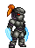
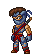

KILLER
INSTINCT
1994 RARE LTD

1994 RARE LTD

1996 RARE LTD

OPEN SOURCE BOOT ROM · ANY IDE DRIVE · BOTH BOARD REVISIONS
REVISION 2.0.1
AGPL-3.0 OPEN SOURCE
A drop-in replacement for the stock U98 boot ROM. One image per board and game version, flashed once.
No drive-model check — CF, SD, DOM and SSD adapters all boot.
KI-U96 A-19489 and KI2-U96 A-20351 — KI1 and KI2 each run on either board.
The game ROM is patched in memory at boot — nothing on disk is modified.
LZSS-compressed game image loads faster than the stock ROM path.
Dipswitch-selectable boot sounds and pause-on-boot, plus a new boot chime.
Fixes the no-sound-at-boot issue under emulation.
| ROM VERSION | STATUS | NOTE |
|---|---|---|
| KI L1.5D | OK | |
| KI L1.5DI | OK | unofficial ROM |
| KI L1.4 | OK | |
| KI L1.3 | OK | |
| KI P47 | PARTIAL | needs full original hardware |
| KI2 L1.0 | OK | |
| KI2 L1.1 | OK | |
| KI2 L1.3 | NO | use KI2 L1.3K |
| KI2 L1.3K | OK | |
| KI2 L1.4 | NO | use KI2 L1.4K |
| KI2 L1.4K | OK | |
| KI2 L1.4P | NO | unofficial ROM |
| KI2 D1.4P | OK | unofficial ROM |
| ROM VERSION | STATUS | NOTE |
|---|---|---|
| KI L1.5D | OK | |
| KI L1.5DI | OK | unofficial ROM |
| KI L1.4 | OK | |
| KI L1.3 | OK | |
| KI P47 | NO | needs remap patch |
| KI2 L1.0 | OK | |
| KI2 L1.1 | OK | |
| KI2 L1.3 | OK | |
| KI2 L1.3K | NO | use KI2 L1.3 |
| KI2 L1.4 | OK | |
| KI2 L1.4K | NO | use KI2 L1.4 |
| KI2 L1.4P | OK | unofficial ROM |
| KI2 D1.4P | NO | unofficial ROM |
| ROM VERSION | I/O REMAP | A-20383 BYPASS | ANY-IDE | 2-IN-1 HDD | RESET | NO FADE | NO WHITEBLOOD |
|---|---|---|---|---|---|---|---|
| KI L1.5D | OK | — | OK | OK | OK | OK | OK |
| KI L1.5DI | OK | — | OK | OK | OK | OK | OK |
| KI L1.4 | OK | — | OK | OK | OK | OK | — |
| KI L1.3 | OK | — | OK | OK | OK | OK | — |
| KI2 L1.4 | — | — | OK | OK | OK | OK | — |
| KI2 L1.4K | — | OK | OK | OK | OK | OK | — |
| KI2 L1.3 | — | — | OK | OK | OK | OK | — |
| KI2 L1.3K | — | OK | OK | OK | OK | OK | — |
| KI2 L1.1 | OK | — | OK | OK | OK | OK | — |
| KI2 L1.0 | OK | — | OK | OK | OK | OK | — |
MULTIBOOT — BOTH GAMES ON ONE BOARD, SWAPPED FROM THE CONTROL PANEL
ORIGINAL KI1 BOARD
DEDICATED KI2 BOARD
ALL RELEASES & SOURCE ON GITHUB · BURN TO A 4-MBIT EPROM, DROP INTO U98